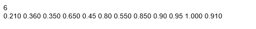
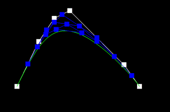
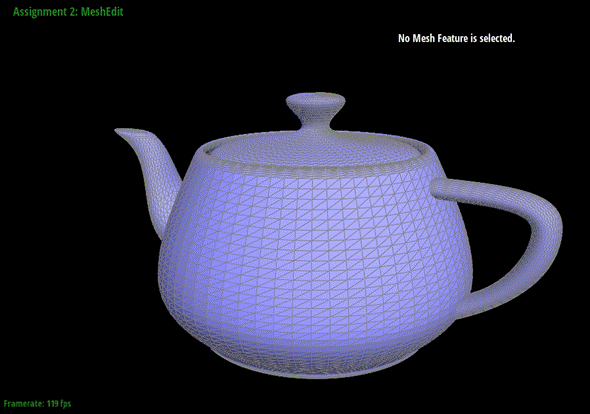
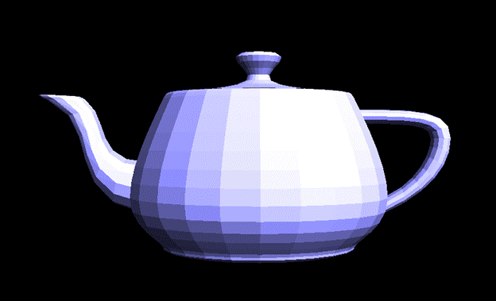
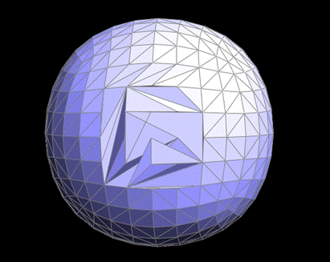
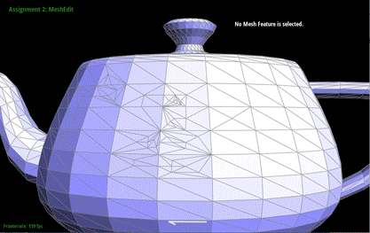
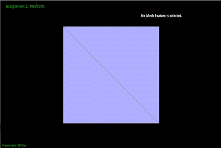
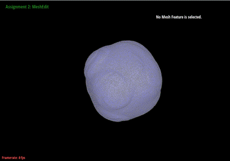
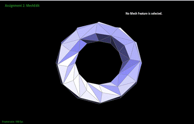
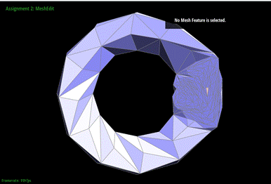

CS184 Project 2 MeshEdit
Overview
Throughout the project, we successfully
implemented de Casteljau's algorithm to estimate
Bezier curves given a set of control points in 1D. We then applied 1D de Casteljau to both dimensions. Then, we were able to generate
3D models and show surfaces more smoothly using area-weighted vertex normals. After that, we implemented the edge flip and split
operations after exploring the halfedge structure.
Lastly, we implemented the loop subdivision to upsample
the meshes.
This is a highly fascinating project for
us! This project allows us to turn theories learnt in class into applications.
It teaches me more about geometry processing.
Part 1
Briefly explain de Casteljau's
algorithm and how you implemented it in order to
evaluate Bezier curves.
The de Casteljau's
algorithm estimates a curve given a set of control points. It works by dividing
the Bezier curve or surface into smaller and smaller sections until each
section can be approximated by a straight line. At each level
of recursion, the algorithm analyzes the control points of the curve or
surface by calculating the weighted averages of the previous level's
control points.
The formula is: new point = (1 - t) * beginning
+ t * endpoint, where beginning and endpoint are two adjacent points given.
This formula is used for all n-1 edges of the given n points, and this procedure
is carried out iteratively until only one point is produced. This last point is
a point on the Bezier curve parameterized by t. Using this procedure to all t
values between 0 and 1 yields the complete Bezier curve.
We implemented a recursive function (evaluateStep), which accepts a set of control points as
input and returns intermediate control points in the following subdivision
level at the argument t. Each call to this function forwards one algorithmic
step. In the function, at each iteration of the loop, the point referred by the iterator is linearly interpolated with the previous
point to obtain the new point, which is then pushed into a vector by lerp.push_back((1.0 - t) * points[i] + t * points[i + 1]). This
function is invoked whenever we press the "E" key.
Take a look at the provided .bzc files and create your
own Bezier curve with 6 control points of your choosing. Use this
Bezier curve for your screenshots below.
Own Bezier curve:

Show screenshots of each step / level of the
evaluation from the original control points down to the final evaluated point.
Press E to step through. Toggle C to show the completed Bezier curve as well.
Control
Point
Level
1

Level
2
Level
3
Level
4

Level
5 (final evaluated point)
Show a
screenshot of a slightly different Bezier curve by moving the original control
points around and modifying the parameter t via mouse scrolling.
Different
Bezier curve with t = 0.25:
Part 2
Briefly explain how de Casteljau algorithm extends to Bezier surfaces and how you
implemented it in order to evaluate Bezier surfaces.
Given a set of Bezier curve, we first generated
a point from each Beizier curve. Since there are 4
Bezier curves, four control points (u) for the moving Bezier curve are
generated. Then we applied de Casteljau's to evaluate
the four points that was resulted to generate a final point v. In summary, this
is essentially applying 1D de Casteljau to both
dimensions.
Show a screenshot of bez/teapot.bez (not .dae) evaluated by your implementation.

Part 3
Briefly explain how you implemented the area-weighted
vertex normals.
In order to implement the
area-weighted vertex normals, we can utilize the HalfedgeCIter to traverse around each face that shares the
source vertex and obtain the area-weighted average of each triangular face.
Given the HalfedgeCIter struct,
we are able to find the three points for a triangle.
p0 = position, p1 = h->next()->vertex()->position;
p2 = h->next()->next()->vertex()->position; The area of the
triangle can be calculated by 0.5 * cross product of (p1-p0) and (p2-p0). Then
we can find out the normal average by adding up area * h->face()->normal(). The length of the vector is equivalent to the
area, and its direction is the normal. The average normals for half-edge meshes are obtained by adding all vectors
together and then normalizing them.
Show screenshots of dae/teapot.dae (not .bez) comparing teapot shading with and without vertex normals. Use Q to
toggle default flat shading and Phong shading.
Flat Shading:

Phong Shading:
Part 4
Briefly explain how you implemented the edge
flip operation and describe any interesting implementation / debugging tricks
you have used.
In order to implement the edge
flip operation, I first iterate and store the half edges, twins, and vertices
of the two triangles. In total, there are two faces, four vertices, and six
half edges. After flipping, the edge's half edge now points to vertex d from
vertex a, while its twin half edge now points to vertex a from vertex d. The
center edge is then flipped counterclockwise, and the half edge is reassigned.
The face on the left becomes the face on top, while the face on the right
becomes the face on the bottom. Finally, We can use
the setNeighbors function to reassign each of the six inner half
edges, as well as reassigning the four outer edges.
Write about your eventful
debugging journey, if you have experienced one.
The majority of the debugging process consisted
of checking for typos and naming. For example, while I was calling the setNeighbors function, I used the wrong element, as there are
many different types (half edges/faces/vertices/edges). Referring to the HalfedgeMesh before and after the flipping procedure as
below was extremely helpful.
Show screenshots of a mesh
before and after some edge flips.
Quadball before flips:
Quadball after flips:

Teapot before flips:
Teapot after flips:
Part 5
Briefly explain how you implemented the edge split operation and
describe any interesting implementation / debugging tricks you have used.
In
my implementation of split edge function, first, I split the given edge e0 by creating
a new vertex at its midpoint and adding six new halfedges
and three new edges to connect the newly created vertex with the existing
vertices. The two new faces are also created by connecting the newly created
edges with the existing halfedges
of the original faces. My implementation also involves updating the
connectivity information of the mesh data structure by setNeighbors
of each halfedges., setting the halfedge
of the new vertex and updating the position of the new vertex to (h0->vertex()->position + h3->vertex()->position) * 0.5
which is the average of vertices c and b. Then I set the flags for e0, each of new created edges, and newly created vertex to indicate
which edges, vertices and faces are new. Lastly, I returns
an iterator to the newly created vertex.
Write about your eventful debugging journey,
if you have experienced one.
During
my implementation, I did not have too many bugs, the only bug I had was my halfedge, face, vertex, edge were assigned incorrectly, in
addition, I forgot to assigned the position of new created vertex to be the
average of two vertices mentioned above, then I checked again and fixed those
issues.
Show screenshots of a mesh before and after some edge splits.
Mesh before some edge splits
Mesh After some edge splits

Show screenshots of a mesh
before and after a combination of both edge splits and edge flips.
Mesh before both edge splits and edge flips
Mesh after both edge splits and edge flips
Part 6
Briefly explain how you implemented the loop subdivision
and describe any interesting implementation / debugging tricks you have used.
In this part, I followed the given instructions to complete the
loop subdivision. First, I iterate through all the mesh vertices for the input
mesh. In th loop, I compute new
position for each vertex based on the positions of its neighboring vertices.
The new position is computed differently for vertices of degree 3 and those
with higher degrees. For degree 3 vertices, the new position is a weighted
average of the old position and the average position of its neighbors which is
(1.0 - degree * (3.0 / 16.0)) * vertex->position + ((3.0 / 16.0) * newPos). For vertices with higher degrees, the new position
is a weighted average of the old position and the average position of its
neighbors, where the weights depend on the degree of the vertex which is (1.0 -
degree * (3.0 / (8.0 * degree))) * vertex->position + ((3.0 / (8.0 *degree))
* newPos). Second, I iterate through all the mesh
edges for the input mesh and for each edge, I computes
a new position for that edge's midpoint based on the positions of its
neighboring vertices. Third, I create a vector to
store edges that needs to split which are original edges that are not new. Then
I iterate through these edges and call function splitEdge
that I implemented in part 5, I set the positions of these split edges to
positions of original edges. Finally, I iterate through each edge in a mesh and
checking if the edge connects a new and old vertex. If
it does, the loop flips the halfedge. Then, I
assigned the new vertex positions to each of final
vertex positions. One bug I experienced was when I was doing split every edges in the mesh, I did not check the instruction clearly,
so I forgot to check if the edge is original edge and I splited the edges that I just splits, the loop became
infinite. Then I fixed the issues by checking is the edge
is new or not.
Take some notes, as well as some screenshots, of your
observations on how meshes behave after loop subdivision. What happens to sharp
corners and edges? Can you reduce this effect by pre-splitting some edges?
In my screenshots of input.dae
below, I found out that after loop subdivision, comparing with the original
mesh, I can easily tell that the sharp corner and edges become much smoother,
each original face is subdivided into smaller faces and new vertices are added
at the midpoint of each original edge and The resulting mesh has a more organic
and natural appearance, with fewer sharp corners and edges because we computed
new vertex positions based on he average of its neighbors.To reduce this effect, it is possible to
pre-split some edges before applying loop subdivision. As shown in images below
of input.dae pre-split, I pre-split one side of mesh,
after few loop subdivision, comparing these images, I see that the sharp edges
and corners are still exist.This
is because pre-splitting an edge creates additional vertices that the
subdivision process can use to preserve the sharpness of the corner or edge. By
adding more vertices to the sharp feature before the subdivision process, the
resulting subdivision will distribute the smoothing effect more evenly and
maintain sharper edges and corners.
Load dae/cube.dae. Perform several iterations of loop subdivision on
the cube. Notice that the cube becomes slightly asymmetric after repeated
subdivisions. Can you pre-process the cube with edge flips and splits so that
the cube subdivides symmetrically? Document these effects and explain why they
occur. Also explain how your pre-processing helps alleviate the effects.
Belows are two images of original cube.dae. From the mesh
after few loop subdivisions, I notice the cube indeed becomes slightly
asymmetric. To reduce this effect or makes it become
symmetric, I pre-process the original cube by flips and splits edges. By
comparing the results from original cube with some loop subdivision, it is
clear to see that the cube becomes more symmetrical than the original one. The
reason of those asymmetrical results is that the
initial cube has an uneven topology or if the edges are not aligned properly.
By performing edge flips and splits to ensure that the resulting mesh will
subdivide symmetrically. Edge flipping helps to change the orientation of faces
and ensure that adjacent faces have the same normal direction and Edge splitting
create new subdivisions in the mesh and to adjust the positioning of vertices
to ensure that the edges are aligned properly.
Cube.dae regular
mesh
Cube.dae mesh
after few Loop subdivision

Cube.dae pre-processed
pre-processed one subdivision
Pre-processed two subdivision
pre-processed a few subdivision

Input.dae
Original mesh
Mesh after one subdivision

Mesh after two subdivision

Mesh after three subdivision
Input.dae
Pre-split mesh
Pre-split one subdivision

Pre-split two subdivision
Pre-split three subdivision